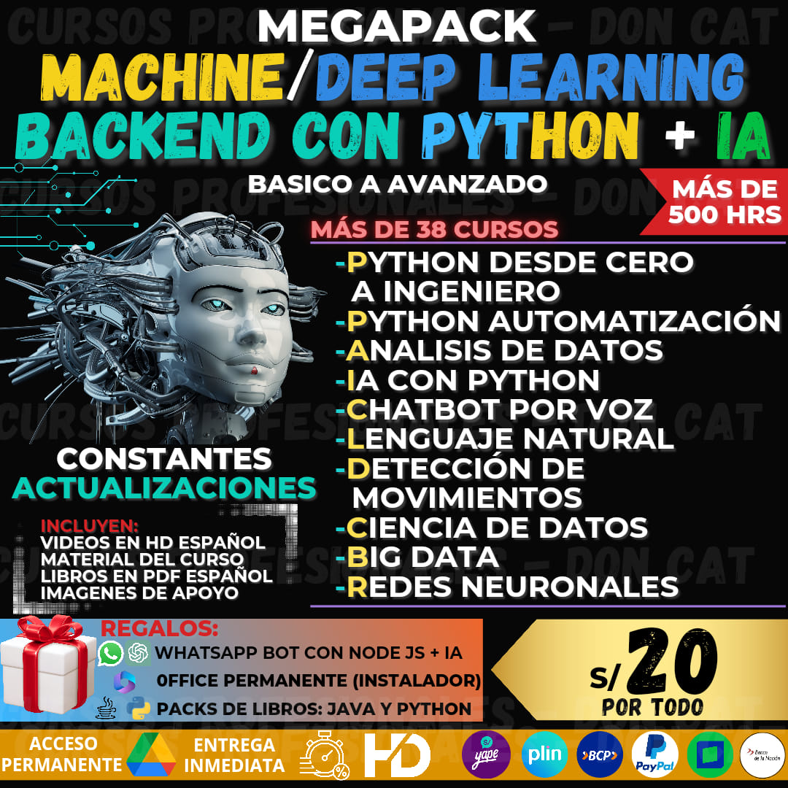

PASOS PARA LA COMPRA
- 📌1. Selecciona el medio de pago
- 📌2. Realiza el pago correspondiente y
toma una foto como comprobante. - 📌3. Envía al WhatsApp el comprobante
de pago, una foto de la promoción, y tu
correo Gmail - 🌐Pagina de facebook oficial🌐
- 🖥️https://www.facebook.com/DonCatCourses
INFORMACIÓN MACHINE LEARNING, DEEP LEARNING, IA Y BACKEND CON PYTHON
- 📌🌟TEMARIO DE LOS CURSOS MACHINE LEARNING🌟
- ✅ Curso Completo de Inteligencia Artificial con Python
- 🎥 Introducción
- 🎥 Cómo Aprenden las Máquinas
- 🎥 Instalación y Requisitos Previos
- 🎥 El Proyecto de la Universidad de Berkeley
- 🎥 Primer Contacto con la Inteligencia Artificial
- 🎥 Mi Primer Agente Inteligente - El Problema de la Montaña Rusa
- 🎥 Deep Learning al Detalle
- 🎥 Deep Q-Learning
- 🎥 Redes Neuronales de Convolución
- 🎥 Mejorando Nuestra Red Neuronal
- 🎥 Entornos Personalizados para Entrenar a Nuestros Agentes
- 🎥 Algoritmo del Deep Actor-Critic
- 🎥 Aplicaciones Avanzadas de las Técnicas del Curso
- 🎥 BONUS - Un Regalo para Ti
- ✅ Open IA Crea tu Asistente Virtual con BotPress y Python
- 🎥 Introducción
- 🎥 BotPress IA
- 🎥 Bot de Telegram con Python
- 🎥 Despedida
- 🎥 Bonus Extra
- ✅ Deep Learning Avanzado para Computer Visión con TensorFlow
- 🎥 Generalidades del Curso
- 🎥 Introducción al Procesamiento de Imágenes
- 🎥 Introducción al Machine Learning Tradicional
- 🎥 Nuestro Primer Clasificador para Reconocer Lunares de Piel
- 🎥 Redes Neuronales para Reconocimiento de Caracteres Escritos a Mano
- 🎥 Red Neuronal Convolucional para Detectar Tumores Cerebrales
- 🎥 Qué Ven las Redes Neuronales Convolucionales - MLinepretable
- 🎥 Transfer Learning para la Detección de Covid
- 🎥 Búsqueda de Imágenes para Seguir la Evolución de un Pokémon
- 🎥 Deep Clustering para Detección de Expresiones Faciales
- 🎥 Introducción al Reinforcement Learning (Aprendizaje por Refuerzo)
- 🎥 Deep Reinforcement Learning para Sistemas que Juegan Atari Automáticamente
- 🎥 CNN 3D para Detección de Violencia en Video
- 🎥 Detección de Objetos para Reconocer Cartas en Imágenes
- 🎥 Conclusión del Curso
- ✅ Machine Learning y Redes Neuronales con Python desde Cero
- 🎥 Lo Que Nadie Te Contó Sobre la Programación y el Desarrollo de Tecnología
- 🎥 Entorno de Desarrollo
- 🎥 Archivos para el Curso
- 🎥 Jupyter
- 🎥 Bases y Fundamentos de Python
- 🎥 NumPy
- 🎥 Pandas
- 🎥 Visualización de Datos
- 🎥 Machine Learning
- 🎥 Regresión Lineal
- 🎥 Agrupación - Clustering
- 🎥 Redes Neuronales
- 🎥 Redes Neuronales en Acción
- 🎥 Redes Neuronales Convolucionales
- ✅ Python 3 Plus - Python desde Cero + Análisis de Datos y Matplotlib
- 🎥 Introducción a Python
- 🎥 Tipos de Objetos
- 🎥 Colecciones de Datos
- 🎥 Control de Flujo
- 🎥 Funciones
- 🎥 Lectura y Escritura de Datos
- 🎥 Programación Orientada a Objetos (POO)
- 🎥 Herencia en Python
- 🎥 Manejo de Bases de Datos con SQLite3 para Python
- 🎥 Manipulación de Datos con NumPy
- 🎥 Manipulación de Datos con Pandas
- 🎥 Visualización de Datos con Matplotlib
- 🎥 Conclusión del Curso
- ✅ Machine Learning de A a la Z: R y Python para Data Science
- 🎥 Bienvenidos al Curso de Machine Learning
- 🎥 Preprocesado de Datos
- 🎥 Regresión (Lineal, Polinómica, SVR, Árboles de Decisión, Bosques Aleatorios)
- 🎥 Clasificación (Regresión Logística, K-NN, SVM, Naive Bayes, Árboles de Decisión, Bosques Aleatorios)
- 🎥 Clustering (K-Means, Clustering Jerárquico)
- 🎥 Reglas de Asociación (Apriori, Eclat)
- 🎥 Reinforcement Learning (Upper Confidence Bound, Muestreo Thompson)
- 🎥 Procesamiento de Lenguaje Natural
- 🎥 Deep Learning (Redes Neuronales Artificiales, Redes Neuronales Convolucionales)
- 🎥 Reducción de la Dimensión (Análisis de Componentes Principales, Análisis Discriminante Lineal, Kernel ACP)
- 🎥 Selección de Modelos (XGBoost)
- 🎥 BONUS
- ✅ Curso de OpenCV para Visión por Ordenador con Python
- 🎥 Introducción
- 🎥 NumPy e Imágenes
- 🎥 Imágenes con OpenCV
- 🎥 Procesamiento de Imágenes
- 🎥 Videos con Python y OpenCV
- 🎥 Detección de Objetos con OpenCV y Python
- ✅ Especialización de Data Science con Python - Laboratorios Grabados
- LABORATORIA EXTENSO
- ✅ Curso de Dialogflow: Programación de Chatbots por Voz
- 🎥 Bienvenida e Introducción
- 🎥 Diseño de Experiencias Conversacionales
- 🎥 Creación del Agente Conversacional
- 🎥 Optimización del Agente
- 🎥 Preparación del Agente para el Lanzamiento
- ✅ Curso de Procesamiento de Lenguaje Natural
- 🎥 Bienvenidos al Procesamiento de Lenguaje Natural con Dialogflow
- 🎥 Modelando Lenguaje
- 🎥 Entrenamiento de Modelos en Dialogflow
- 🎥 Integración con Facebook Messenger
- 🎥 Respuestas Dinámicas en Dialogflow
- 🎥 Integración de Base de Datos en la Nube con Dialogflow
- 🎥 Demostración del Modelo en Dialogflow
- 🎥 Conclusiones
- ✅ Machine Learning con Scikit-Learn
- 🎥 Módulo 1: Introducción a Scikit-Learn
- 🎥 Módulo 2: Ingeniería de Características
- 🎥 Módulo 3: Utilidades para la Creación de Modelos
- 🎥 Módulo 4: Aprendizaje Supervisado
- 🎥 Módulo 5: Aprendizaje No Supervisado
- 🎥 Módulo 6: Otros Temas
- 🎥 01 Bienvenida
- 🎥 02 Contexto del Deep Learning y Motivación
- 🎥 03 Entorno de aprendizaje
- 🎥 04 ¿Qué es el Deep Learning?
- 🎥 05 Introducción a las Redes Neuronales Artificiales (RNAs)
- 🎥 06 El Perceptron
- 🎥 07 Redes Neuronales Artificiales Profundas
- 🎥 08 Función de error y de optimización en RNAs
- 🎥 09 Entrenamiento de Redes Neuronales Artificiales Profundas
- 🎥 10 [Opcional] Implementación Vectorizada de RNAs
- 🎥 11 Regresión y Clasificación con RNAs
- 🎥 12 Introducción a Keras
- 🎥 13 Funciones de activación
- 🎥 14 Funciones de Optimización
- 🎥 15 Selección de hiperparámetros
- 🎥 16 Tensorflow 2.0
- 🎥 17 Consideraciones de un proyecto de Deep Learning
- 🎥 18 Despedida del curso
- 🎥 01 Introducción
- 🎥 02 Fundamentos de TensorFlow y Machine Learning
- 🎥 03 Fuentes de datos y cómo acceder a ellas
- 🎥 04 Un repaso de Machine Learning
- 🎥 05 Regresión Lineal
- 🎥 06 Las máquinas de soporte vectorial
- 🎥 07 Encontrar los vecinos más cercanos
- 🎥 08 Redes neuronales
- 🎥 09 Procesamiento Natural del Lenguaje
- 🎥 1. Presentación e Introducción a la Clase
- 🎥 2. Motivación
- 🎥 3. Historia de las Neuronas
- 🎥 4. Indicaciones de Cuaderno en Google Colab.
- 🎥 5. Historia de las Redes Neuronales, Perceptrón y Ejemplo
- 🎥 6. Bias y Funciones de Activación
- 🎥 7. Continuación de Ejemplo
- 🎥 8. Redes Neuronales y Producto Matricial.mpt
- 🎥 9. Ejercicio Práctico - Red Neuronal de Pesos Aleatorios
- 🎥 10. Retos y Comentarios Extra
- 🎥 11. O_A Pregunta 1
- 🎥 12. Q_A Pregunta 2
- 🎥 13. Q_A Pregunta 3
- 🎥 14. Redes Neuronales con Tensorflow y Keras pt1
- 🎥 15. Redes Neuronales con Tensorflow y Keras pt2
- 🎥 16. Introducción a la Clase
- 🎥 17. El Paradigma del Aprendizaje
- 🎥 18. Aprendizaje de las Neuronas
- 🎥 19. Generando las Muestras, Entrenando a la Neurona y Haciendo Predicciones
- 🎥 20. TensorFlow y el Dataset de Modas
- 🎥 21. TensorFilor y Keras - Creación del Modelo
- 🎥 22. TensorFlow - Entrenamiento del Modelo
- 🎥 23. TensorFlow - Evaluación del Modelo y Predicción
- 🎥 24. Convolución
- 🎥 25. Redes Convolucionales - Creación, Entrenamiento, Evaluación y Predicción del Modelo
- 🎥 26. Redes Convolucionales - Situaciones Extras 2
- 🎥 27. O_A1
- 🎥 1. Bienvenido al curso Machine Learning desde cero. Proyectos reales en Python
- 🎥 2. Machine Learning Contexto y Motivación
- 🎥 3. Introducción y creación del entorno de aprendizaje para Python 3
- 🎥 4. ¿Qué es el Machine Learning?
- 🎥 5. Regresión y Clasificación
- 🎥 6. Creación de un proyecto de Machine Learning
- 🎥 7. Support Vector Machines (SVM)
- 🎥 8. Árboles de decisión y conjuntos de árboles (Random Forest)
- 🎥 9. Selección y Extracción de Características
- 🎥 10. Algoritmos de Clustering
- 🎥 11. Algoritmos de Machine Learning basados en Probabilidad
- 🎥 12. Algoritmos de Machine Learning para la Detección de Anomalías
- 🎥 13. Redes Neuronales Artificiales y Deep Learning
- 🎥 14. Despedida del curso Machine Learning desde cero. Proyectos reales en Python 3
- 🎥 01 Bases y Conceptos de la Ciencia de Datos
- 🎥 02 Introducción al Computo Científico
- 🎥 03 Análisis Exploratorio (EDA) y Visualización de Datos
- 🎥 04 Visualización Efectiva de Datos con Altair
- 🎥 05 Introducción a Machine Learning
- 🎥 06 Introducción a Deep Learning
- 🎥 07 Introducción a R
- 🎥 Módulo 3 Creación de Gráficos Avanzados
- 🎥 Introducción al Machine Learning
- 🎥 Opcional: Configuración de Python e Implementación de Algoritmos ML
- 🎥 Regresión Lineal Simple
- 🎥 Regresión Lineal Múltiple
- 🎥 Algoritmos de Clasificación: K-Nearest Neighbors
- 🎥 Algoritmos de Clasificación: Árbol de Decisión
- 🎥 Algoritmos de Clasificación: Regresión Logística
- 🎥 Clustering
- 🎥 Sistema de Recomendación
- 🎥 Conclusión
- 🎥 01 Fundamentos de Python
- 🎥 02 Python - Comprehensions, Funciones y Manejo de Errores
- 🎥 03 Introducción a la Terminal y Línea de Comandos
- 🎥 04 Python - PIP y Entornos Virtuales
- 🎥 05 Entorno de Trabajo para Ciencia de Datos con Jupyter Notebooks y Anaconda
- 🎥 06 Manipulación y Transformación de Datos con Pandas y NumPy
- 🎥 07 Visualización de Datos con Matplotlib y Seaborn
- 🎥 08 Análisis Exploratorio de Datos
- 🎥 09 Configuración Profesional de Entorno de Trabajo para Ciencia de Datos
- 🎥 10 Manejo de Datos Faltantes.
- -----------------------------------------------
- ✅ RUTA DESARROLLO BACKEND CON PYTHON Y DJANGO
- ✅ 01 Curso de Introducción a la Terminal y Línea de Comandos
- 🎥 (CONTENIDO EXTENDIDO)
- ✅ 02 Curso Profesional de Git y GitHub
- 🎥 (CONTENIDO EXTENDIDO)
- ✅ 03 Curso Básico de Python
- 🎥 (CONTENIDO EXTENDIDO)
- ✅ 04 Curso de Introducción al Pensamiento Computacional con Python
- 🎥 (CONTENIDO EXTENDIDO)
- ✅ 05 Curso de Introducción al Desarrollo Backend
- 🎥 (CONTENIDO EXTENDIDO)
- ✅ 06 Curso de Python Intermedio: Comprehensions, Lambdas y Manejo de Errores
- 🎥 (CONTENIDO EXTENDIDO)
- ✅ 07 Curso de Programación Orientada a Objetos (POO)
- 🎥 (CONTENIDO EXTENDIDO)
- ✅ 08 Curso de POO y Algoritmos con Python
- 🎥 (CONTENIDO EXTENDIDO)
- ✅ 09 Curso de Fundamentos de Bases de Datos
- 🎥 (CONTENIDO EXTENDIDO)
- ✅ 10 Curso de Estructuras de Datos Lineales con Python
- 🎥 (CONTENIDO EXTENDIDO)
- ✅ 12 Curso Profesional de Python
- 🎥 (CONTENIDO EXTENDIDO)
- ✅ 13 Curso Práctico de Python: Creación de un CRUD
- 🎥 (CONTENIDO EXTENDIDO)
- ✅ 14 Curso de FastAPI: Fundamentos, Path Operations y Validaciones
- 🎥 (CONTENIDO EXTENDIDO)
- ✅ 15 Curso de FastAPI: Modularización, Datos Avanzados y Errores
- 🎥 (CONTENIDO EXTENDIDO)
- ✅ 16 Curso de Flask
- 🎥 (CONTENIDO EXTENDIDO)
- ✅ 17 Curso Básico de Django
- 🎥 (CONTENIDO EXTENDIDO)
- ✅ 18 Curso de Django Intermedio: Testing, Static Files, Django Admin
- 🎥 (CONTENIDO EXTENDIDO)
- -----------------------------------------------
- 📌Cursos de Machine Learning, Deep Learning con Python + backend con Python y Django.
- 📌Todos los cursos profesionales.
- 🎁INCLUYE MÁS DE 130 DE LIBROS PYTHON Y JAVA.
- 🎁OFFICE PERMANENTE (POWER POINT, EXCEL, WORD, ETC).
- 📌Incluyen material usado durante el curso.
- 📌Los cursos 100% en español HD.
- 📚CURSOS PARA POTENCIAR TU PORTAFOLIO LABORAL📈📈
- 📌𝘾𝙊𝙎𝙏𝙊: 20 𝙨𝙤𝙡𝙚𝙨 (Ú𝙉𝙄𝘾𝙊 𝙋𝘼𝙂𝙊).
- ✅ 01 Curso de Introducción a la Terminal y Línea de Comandos
🌟El acceso es para siempre🌟La entrega es inmediata🌟El material se actualiza🌟100% Español HD🌟